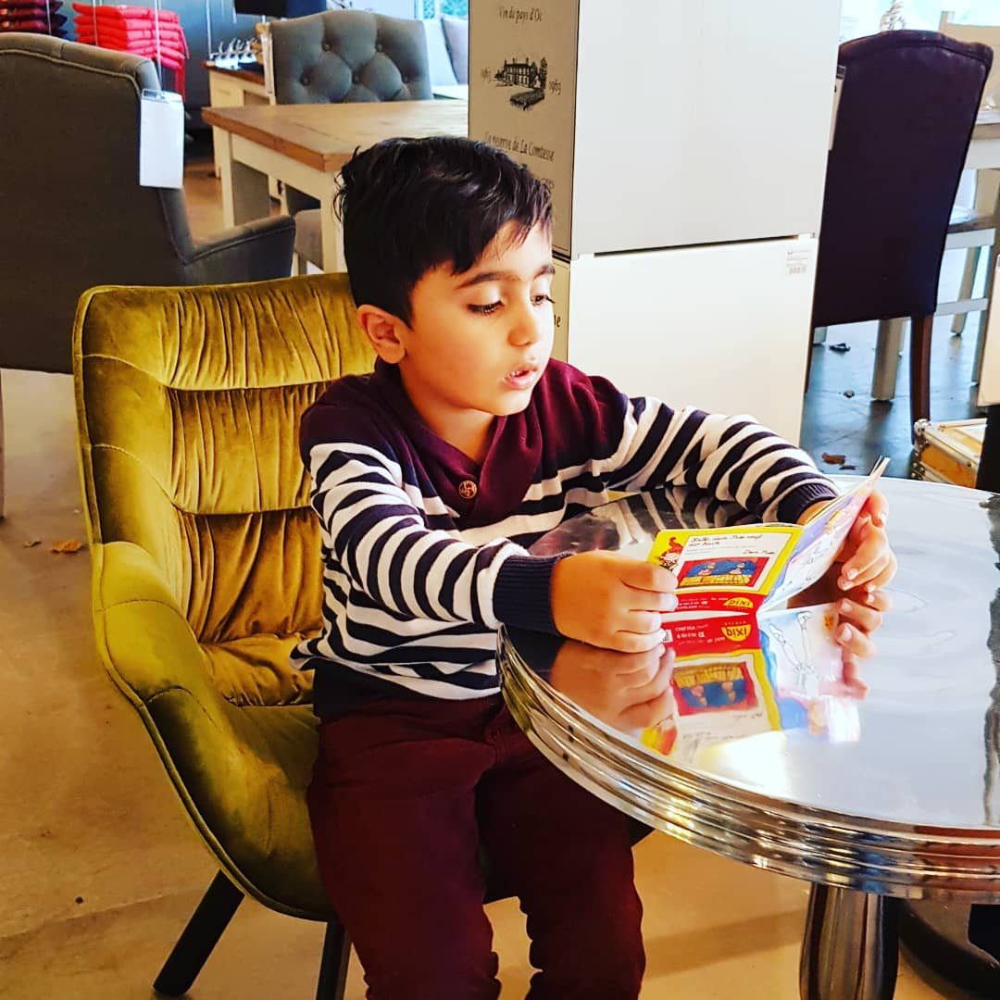

“who is refugee?”
A morning my child returned home from playground crying…..
sobbingly he asked: “Tell me father, who is a refugee?”
“Is it a curse or a name?”
My heart got hurt and wanted to scream.
A pearl of tear came down of my eyes
and I slowly rubbed my eyes with back of my hands….
and sought a nice answer for that question….
I told my son….”See my dear son….
do you know what homeland is?”
He said,
“Yes….you once told me that homeland is the home of the ancestors……”
I kissed him on cheeks and sadly added,
“ If in a dark night, a group of thieves,
bandits burn down you father’s house
and start firing your home
from every corner and you get out of the house
because of the horror made
by those aggressors
and live on the stone carpets of the strangers,
you will become refugee my son, my beloved."
Fresh tears wetted my son’s eyes
and worries darkened his mind and then said,
“ I understood that refugee is a homeless man.” Since then,
I took the sentence of my son as a single-verse poem and whisperingly
I started repeating the poem,
“You are right my dear,
refugee is a homeless man,
refugee is a nestless bird.”